Carrés de
plage
C'est en marchant sur
la plage que j'ai manigancé
de voler à la mer, et au vent, un peu de leur talent.
Leurs œuvres éphémères, toujours
recommencées,
me parlent du passé dans la trace du vent,
et du présent dans l'odeur de la mer,
et de demain dans le flot du soleil.
Quelle est la plage ? quelle est la mer ?
peu importe : l'exotisme n'a pas sa place ici.
Dans chaque carré, c'est l'esprit d'une plage
familière,
à un instant donné, que j'ai voulu voler..
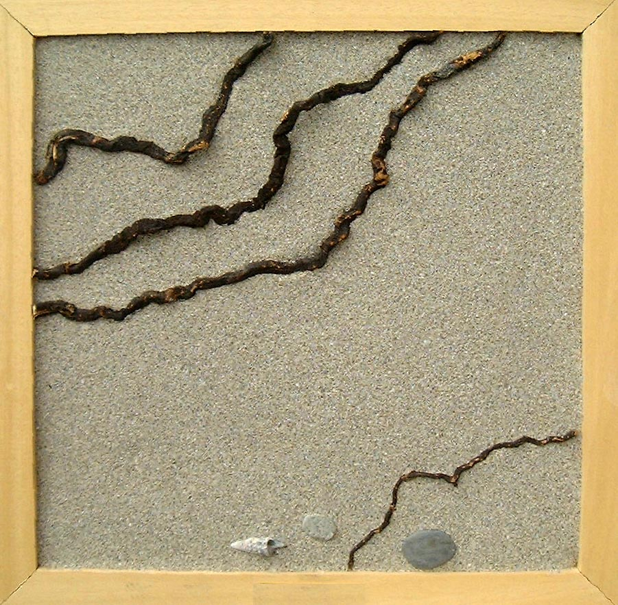
Ici, les racines arrachées
s'approchent de la vague, qui les emportera au soir.
De la terre au soleil, et du soleil au vent, et du vent
jusqu'à l'eau,
leur voyage inattendu ne fait que commencer.
Format 40 X 40
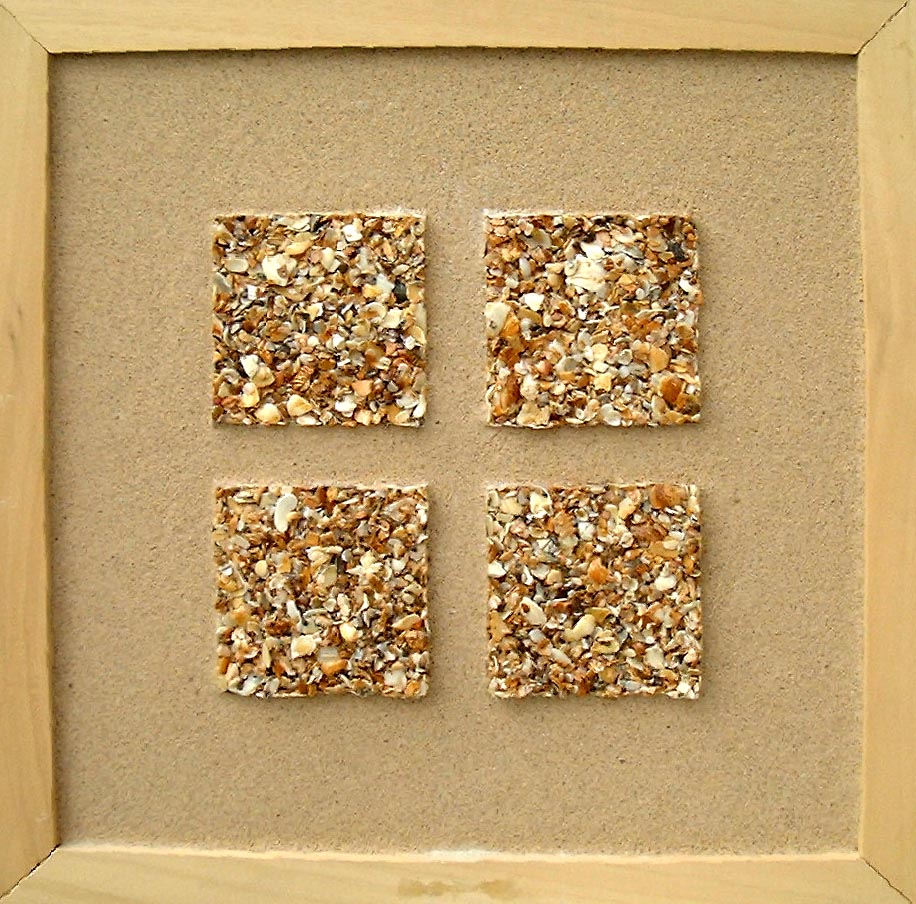
Ici, les coquilles se sont
regroupées, en bancs réguliers étalés sur
la plage,
pour qu'on ne voit plus qu'elles aux reflets du couchant.
Le vent les caresse doucement, évitant bien de déposer
sur elles le sable qu'il envole.
Format 50 X 50
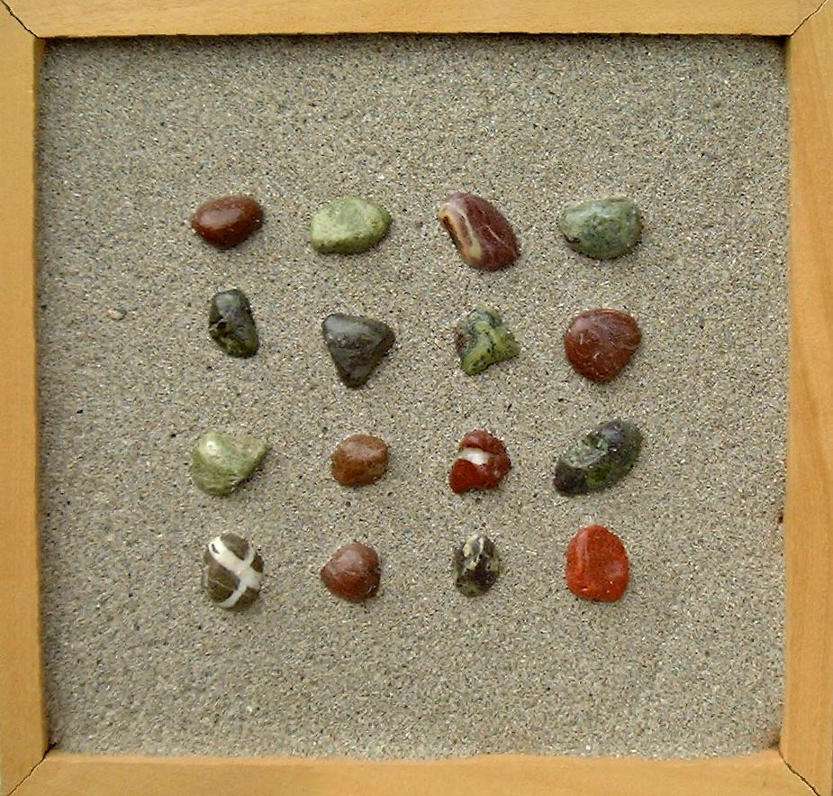
Ici, chaque pierre roulée
joue de coquetterie,
n'ayant qu'à demi accordé au flot la rondeur qu'il
voulait.
Chacune raconte une histoire de torrents, et d'orages, et de terres
lavées,
et de mer enfin rencontrée.
Format 35 X 35
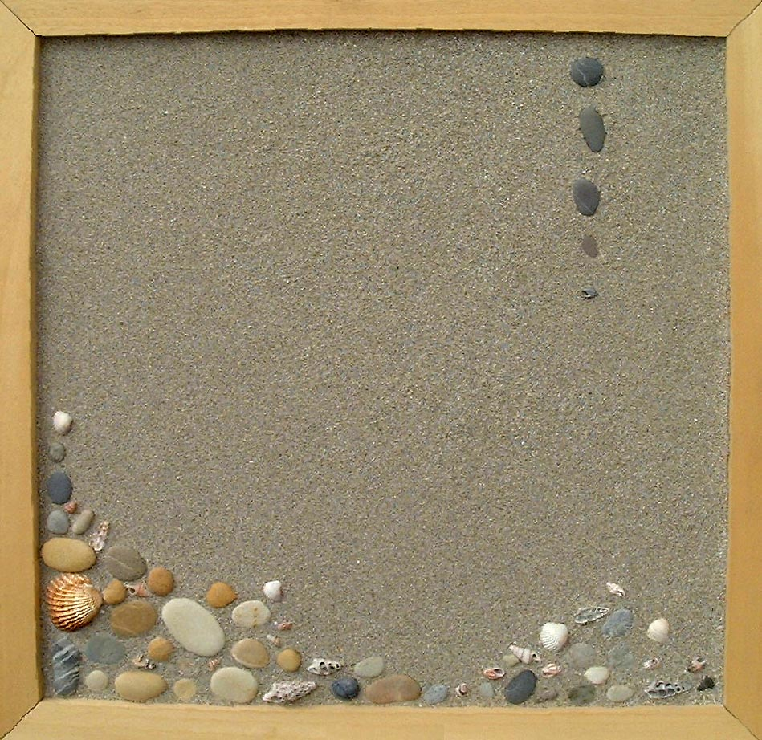
Ici, chaque chose est
lavée, puis relavée à chaque marée
nouvelle.
Après une conversation bruisseuse et mousseuse de bulles
éclatées,
un décor silencieux s'offre au soleil qui vient pour
l'observer.
Format 50 X 50
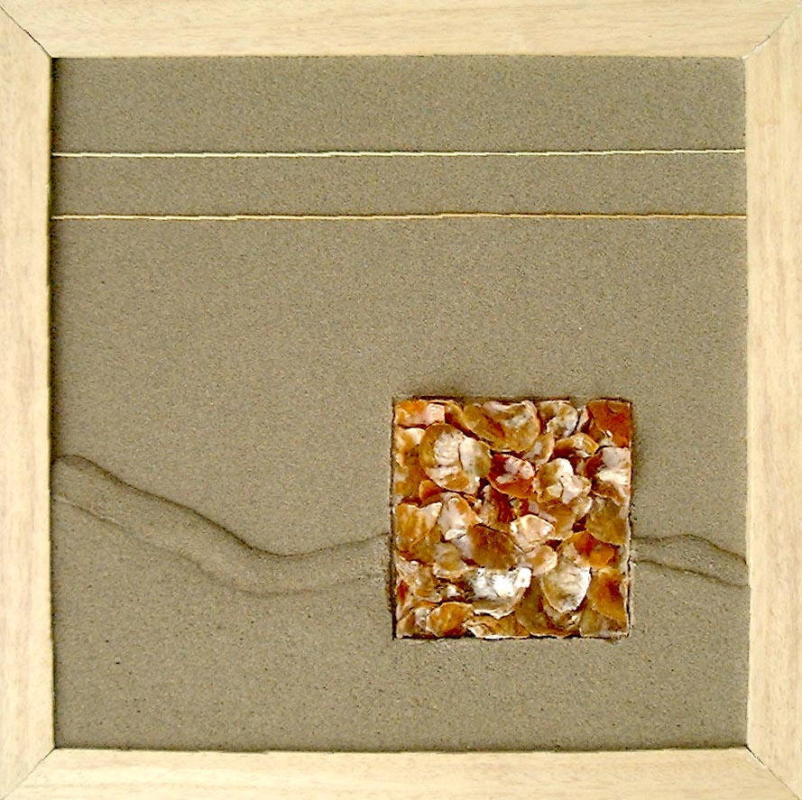
Ici, le vent a regroupé la
nacre de coquilles informes, oubliées des enfants.
Les joncs en prennent les reflets, au soleil du couchant.
La mer les laissera dans leur conversation colorée,
jusqu'à la prochaine tempête.
Format 50 X 50
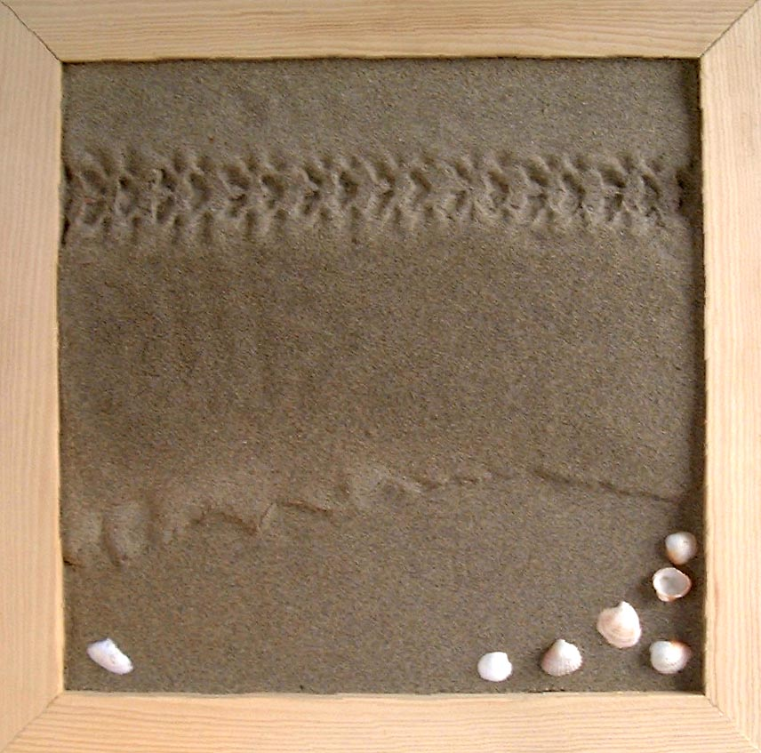
Ici, un vélo est
passé, roue arrière presque dans la trace de la roue
avant.
La mer effacera le voyage de ce promeneur.
que ces coquilles abandonnées viennent observer,
au gré du caprice des flots.
Format 40 X 40
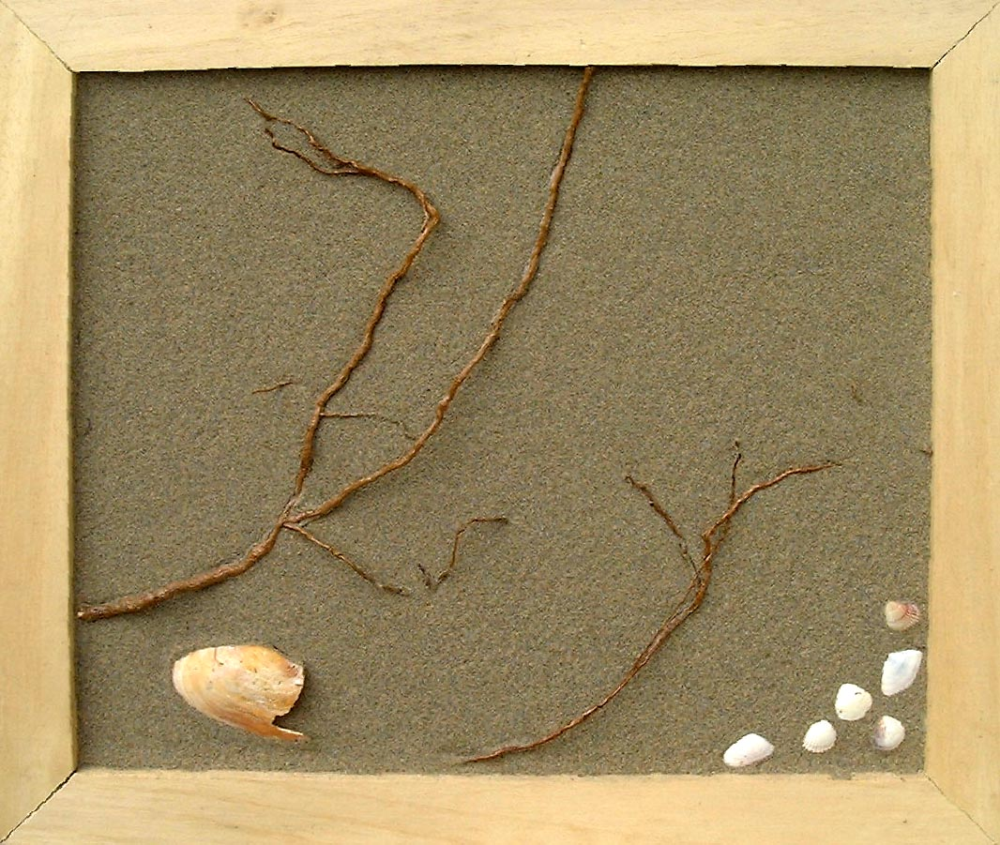
Ici, l'arbrisseau
étique, fatigué de lutter au vent, offre son destin
à la vague,
qui sape la dune nourricière.
Il boit la mer de ses racines, avant de s'y abandonner entier,
comme le fait le bois noble des bateaux.
Format 45 X 40
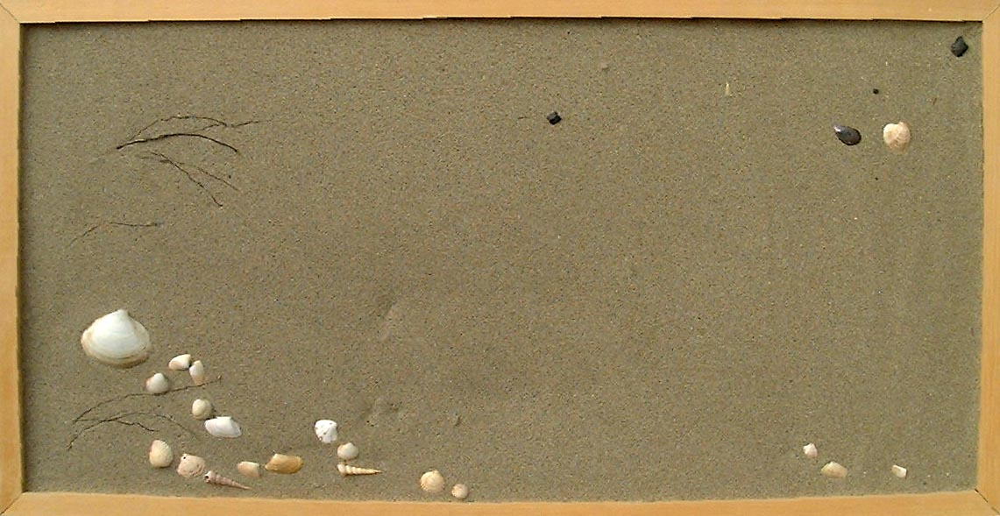
Ici, la plage est simplement
comme la mer l'a laissée.
Elle attend un enfant qui viendra y rêver de châteaux, et
de fées, de trésors, de pirates.
Il est là son trésor de l'été, dans ces
odeurs marines à son cœur attachées.
Format 80 X 40
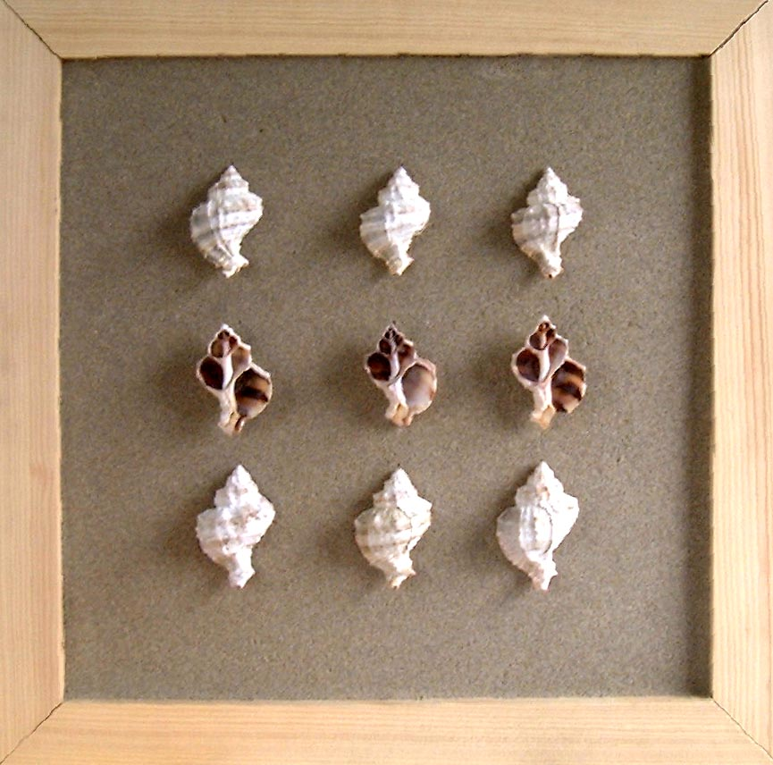
Ici, la mer, le vent, ont fait
de la plage un velours. Fin et léger.
Quelques coquilles ont choisi cet écrin.
Elles offrent leur parfaite architecture au sable
désordonné,
qui s'est aujourd'hui comme apaisé sous elles.
Format 40 X 40
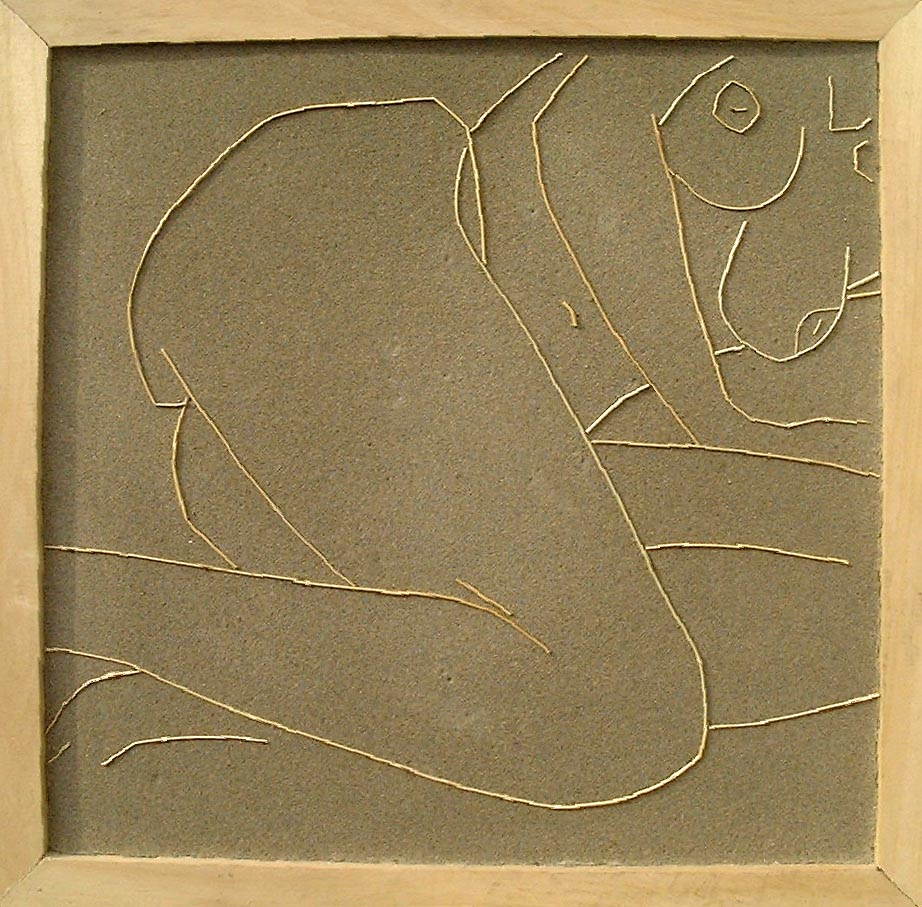
Ici, les chevaux blancs ont
piétiné les joncs.
Le vent en a joué, formant le souvenir d'une baigneuse
allongée.
A-t-il gardé pour lui la blonde chevelure qu'il avait de ses
doigts
si bien désordonnée ?
Format 60 X 60
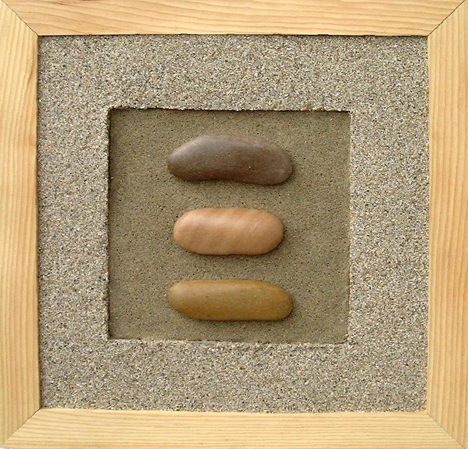
Ici, le vent a hissé
sur la dune un sable plus léger de coquilles
brisées.
Le sable gris et minéral est resté à la mer,
dur, fin et presque soyeux
pour faire écrin à ces pierres roulées
Format 40 X 40
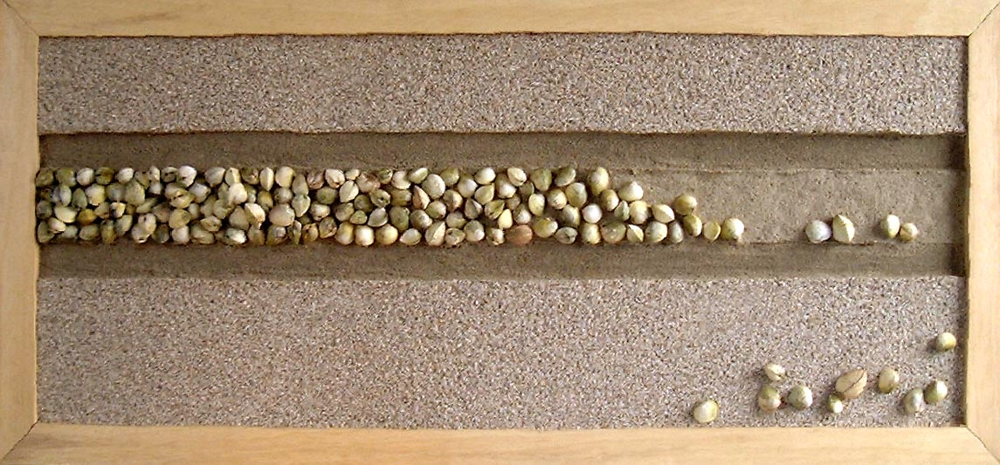
Ici, violemment, un coup de
mer a jeté à la dune
mille coquilles entières qu'elle a
abandonnées.
Elles ont fini là, brûlées par le soleil, formant
un austère cortège,
espérant encore, peut-être, y retourner.
Format 80 X 40
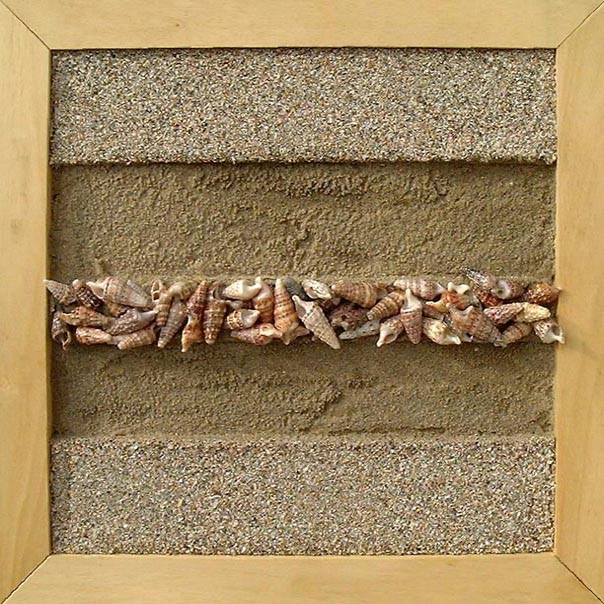
Ici, une colonie inattendue de
coquilles rangées s'est posée sur le sable.
Qui viendra en premier des enfants ou du flot,
de la pluie ou du vent, ou d'un artiste errant,
pour les emporter ?
Format 40 X 40
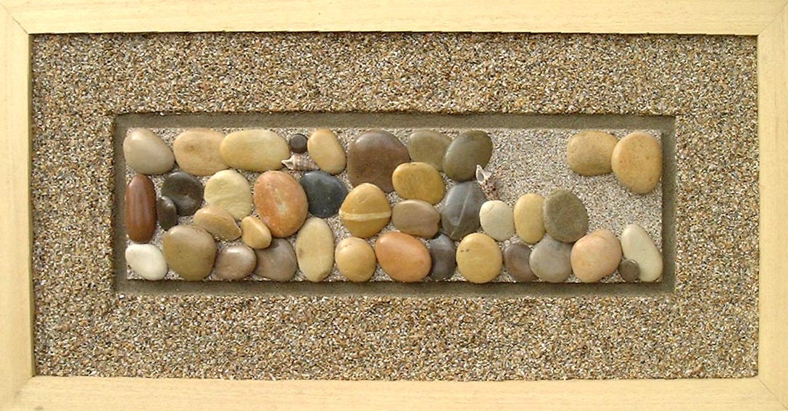
Ici, c'est le bruit :
à chaque vague nouvelle celui des pierres ramenées,
puis retirées dans la mousse et l'écume,
et ramenées à nouveau dans le cliquetis du sable et les
éclats des bulles.
Format 80 X 40
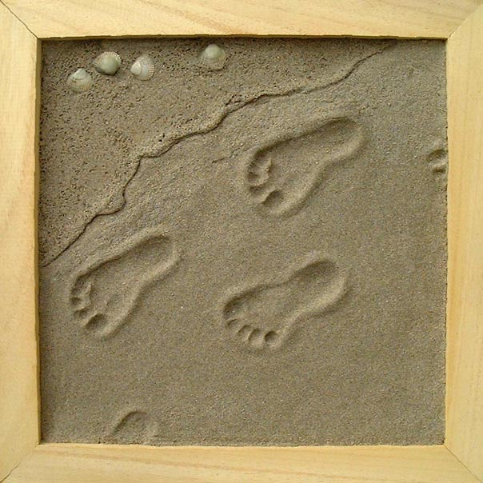
Ici, un bébé a
laissé sur la plage le souvenir de quelques premiers pas,
soutenu sous les bras par des mains familières.
Non, il ne sait pas marcher, ni ne pense à nager,
tout ébloui qu'il est de ce jour tout doré.
Format 40 X 40